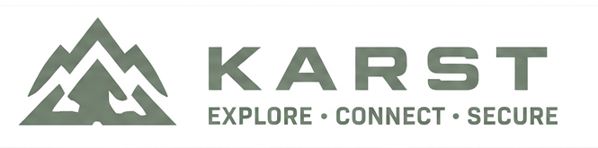

01
Trust is earned, not assumed.
Every connection begins with identity and permission. Being “on the network” is never a free pass.
Zero Trust, in plain English →
View the projectprivate networking, naturally
Karst helps your people, devices, and services find each other safely — across clouds, offices, homes, and the far edge of the map.
Explore · Connect · Secure
Ready forthe big idea
In nature, karst landscapes move water through rock by finding the best path. Karst does something similar for your network: it creates private, encrypted paths between the things you choose — even when they live in very different places.
01
Every connection begins with identity and permission. Being “on the network” is never a free pass.
Zero Trust, in plain English →02
Karst uses modern post-quantum cryptography designed to protect information from future threats, too.
What “post-quantum” means →03
Connect cloud workloads, branch offices, tiny devices, and home labs without making a tangled mess.
Explore your use case →a 90-second tour
You decide who belongs. Karst handles the route.
A laptop, a sensor, a cloud service, or a small computer at home joins your private network.
Say exactly which people and services can communicate. Nothing gets access just by being nearby.
Devices connect directly when they can, and use an encrypted relay when they cannot.
meet the field team
These are the specialists that help your private network stay discoverable, connected, and grounded.
KARSTDNS PLANNED
Sees all. Navigates darkness.
Gives your mesh memorable private names, so you reach the right service without keeping track of addresses.
AVEN
Adapts. Flows through any environment.
Finds the best route between two devices — even when everyday network obstacles get in the way.
PONOR / RELAY
Built for the deep. Uncovers the hidden.
Provides an encrypted bridge when a direct path is not possible, keeping the mesh moving.
BEDROCK PLANNED
Resourceful. Solves every challenge.
Adds a network lock: a practical way to keep membership rooted in the people you trust.
The underground passageway: Karst’s post-quantum handshake and encrypted transport, carrying traffic safely between your approved peers.
zero trust, in plain english
It simply means each request is checked before it is allowed. Like a friendly cave guide checking everyone has the right map before they enter a passage.
Identity + policy + encrypted connection = a calmer network.
post-quantum, in plain english
Some attackers collect encrypted data now, hoping stronger computers can read it later. Karst is designed with NIST-standardized algorithms that help prepare for that future.
Including ML-KEM and ML-DSA — alongside established cryptography.
made for real terrain
Start small. Grow gradually. Keep your coordination and policy under your control.
Make separate cloud environments feel like one private place.
Give distributed devices a direct path home, with only the access they need.
Connect teams, branches, and services without a traditional network maze.
Reach your projects from anywhere without opening up your whole home network.
your network, your ground
Run your own coordination server and relay infrastructure. Karst is built for people who want the simplicity of a modern mesh VPN without handing over the keys to their network.
See the project on GitHub